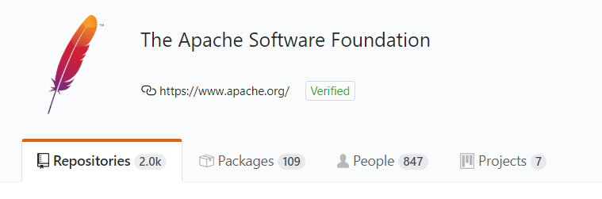
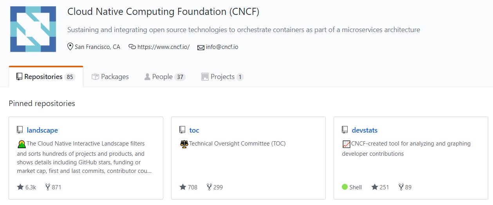
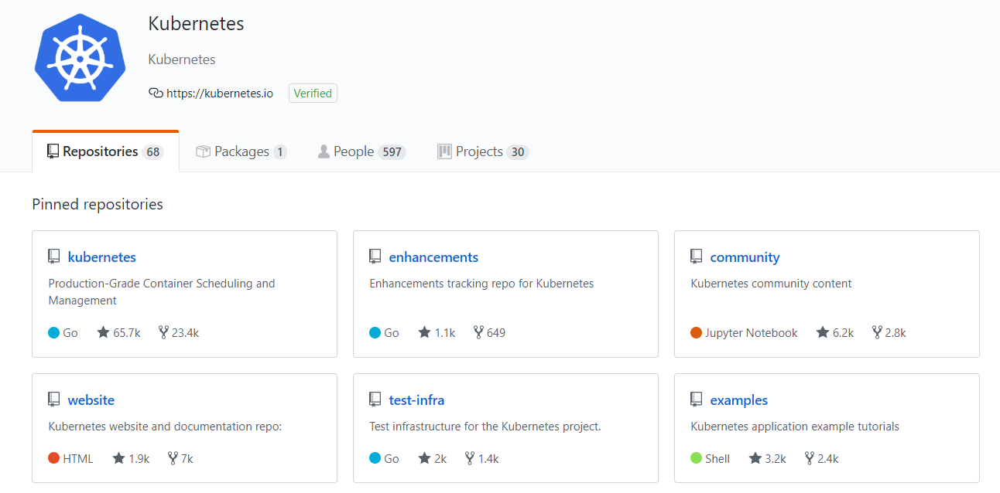
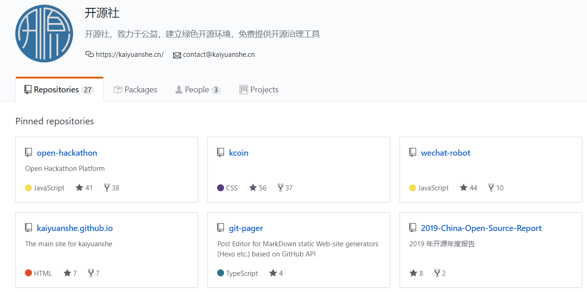
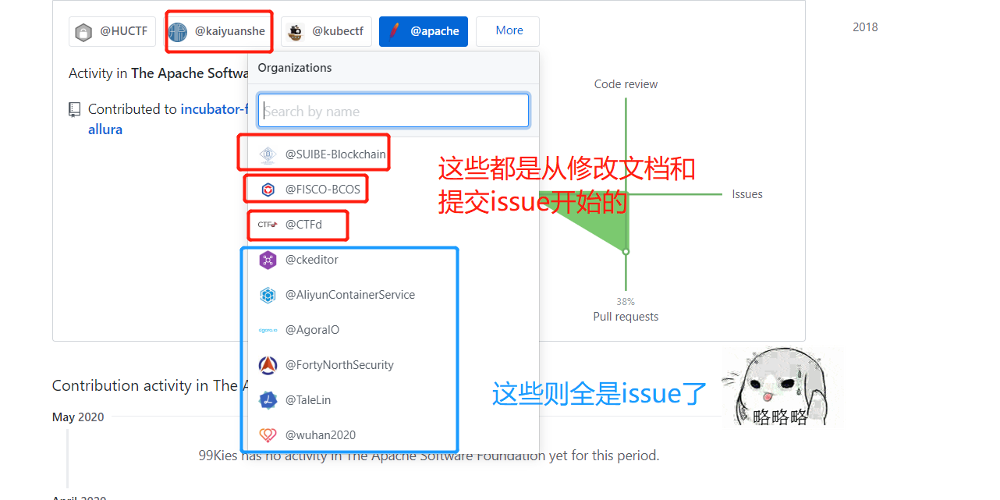

class: center, middle, title <h1>就是一个小小的开源经验分享</h1> 汤会枫（小汤 / 99Kies） --- class: center, middle, inverse ## 感谢李老师邀请我来给大家做这次分享 --- ## 开源 是什么😱？ -- 长答案：https://baike.baidu.com/item/%E5%BC%80%E6%94%BE%E6%BA%90%E4%BB%A3%E7%A0%81/114160?fromtitle=%E5%BC%80%E6%BA%90&fromid=20720669&fr=aladdin -- - 短答案：把项目代码在Github或者Gitee上发布 --- class: center, middle ## 最经典的开源项目和开源社区  --  --  --- class: center, middle ## 最经典的开源项目和开源社区  -- --- ## 汤会枫 / 99Kies - OpenSource Developer - 开源社候选成员 - Flask开发者, Docker/K8s方向 - 还是一个小小的CTFer, 因为喜欢Coding, 可能要放弃这块了 - [博客地址](https://blog.csdn.net/qq_19381989) - 仓库地址 https://github.com/99kies 还是个开源世界里的菜鸡，手上没有好项目（star上千！）哇 --- # 何为开源精神 -- 我的比较认可的理解: **拾火柴精神** -- 因为 众人拾柴火焰高，单丝不成线，独木难成林 -- <br> -- 开源世界，其实可以比喻成一个江湖场。 -- 看完这些，其实我们就已经可以给开源世界做**贡献**了！ -- --- class: center, middle, inverse # 👀 从提出issue开始 **( 或者帮助项目修改文档 )** --- class: center, middle # 拿我的例子来说 -- --  -- --- # 从简单开始 -- **关于个人项目** -- 把自己的项目(哪怕是学习笔记)放到Github上 开发出有意思的项目（这个真的很重要） -- **关于向组织贡献** -- 从issue / 修改文档开始 从 Contributors 到 Commiter 再到 Member -- ----------- *当然你得找到你自己兴趣有关的项目，毕竟这样子才有动力！🤣* --- class: center, middle, inverse # 参与开源的好处（只讲学生党！） --- ## 怎样的人，才是技术大牛呢？ -- 我精通Go，Python，Solidity？ -- 编程能力很强？ -- 业务能力很强？ -- <br> 不！都不是 -- ----------- -- 只有手上有🔥项目，才是真正的大牛！就比如： -- 我是Linux的一个Contributor -- 我是Kubernetes的Commiter -- 我开发的**FISCO_BCOS_Toolbox**在GitHub上有**5k**的star -- 这才是一个 Great Engineer / Great Developer ----------- -- --- # 其实还有好多好多 --- ## Links & Contact - Blog: [Blog](https://blog.csdn.net/qq_19381989) - GitHub: [github.com/99kies](https://github.com/99kies) - slides: [github.com/greyli/pyconchina2019-api](https://github.com/greyli/pyconchina2019-api)